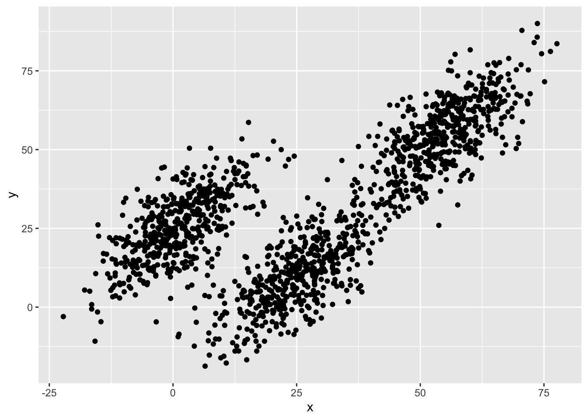
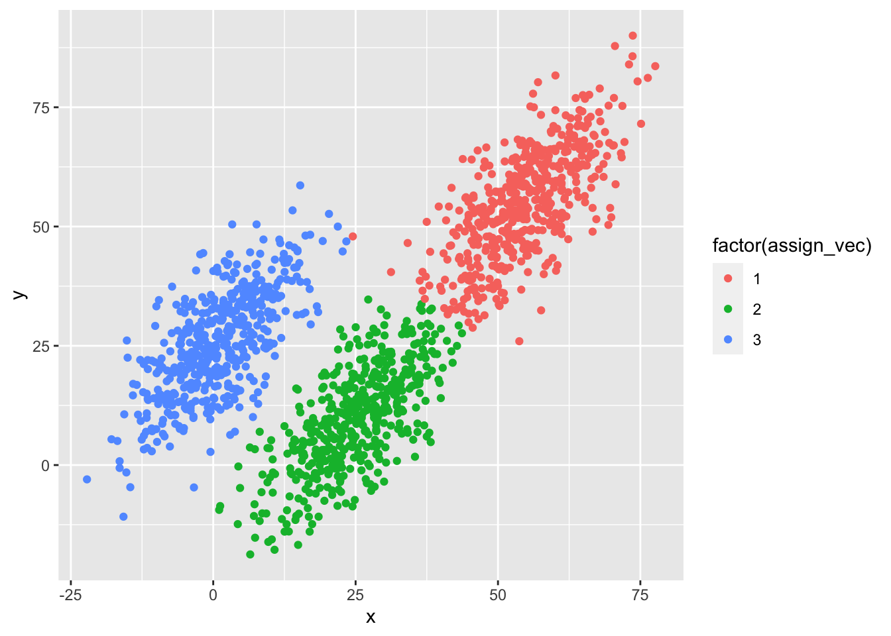

In this lesson, we’ll continue to practice functional programming in R. To give us something to work on, we’ll code up our own version of a k-means clustering algorithm. R already has a function to do this, appropriately titled kmeans(), but we’ll pretend it doesn’t.
Being able to code up an algorithm based on mathematical notation or pseudocode is a really valuable skill to possess. As algorithms become even moderately complex, however, leaning on quick and dirty spaghetti code to “just get the job done” quickly becomes a mess. When you’ve worked hard to get an algorithm to work, it’s important to work a little harder to write it in a functional way that
Makes it clear what you have done (self-documenting);
Is easily ported to another project.
With these goals in mind, we’ll write our own k-means clustering function. Because this lesson isn’t about learning the ins and outs of machine learning, we won’t dive into the various robustness checks we might otherwise perform were this a real project. That said, we should be able to write a well-performing function.
── Attaching core tidyverse packages ──────────────────────── tidyverse 2.0.0 ──
✔ dplyr 1.1.0 ✔ readr 2.1.4
✔ forcats 1.0.0 ✔ stringr 1.5.0
✔ ggplot2 3.4.2 ✔ tibble 3.1.8
✔ lubridate 1.9.2 ✔ tidyr 1.3.0
✔ purrr 1.0.2
── Conflicts ────────────────────────────────────────── tidyverse_conflicts() ──
✖ dplyr::filter() masks stats::filter()
✖ dplyr::lag() masks stats::lag()
ℹ Use the conflicted package (<http://conflicted.r-lib.org/>) to force all conflicts to become errors
library(plotly)
Attaching package: 'plotly'
The following object is masked from 'package:ggplot2':
last_plot
The following object is masked from 'package:stats':
filter
The following object is masked from 'package:graphics':
layout
Read in and inspect data
## ---------------------------------------------------------## read in data## ---------------------------------------------------------df <-readRDS(file.path("data", "kmeans.RDS"))## showdf
# A tibble: 1,500 × 3
x y z
<dbl> <dbl> <dbl>
1 33.1 11.6 -16.0
2 -8.55 6.01 11.8
3 50.7 56.3 97.8
4 2.83 27.5 34.4
5 -4.66 20.0 25.1
6 -3.04 16.2 22.8
7 30.5 12.1 -14.3
8 7.08 25.3 25.6
9 1.33 20.1 17.6
10 -3.11 13.4 11.5
# … with 1,490 more rows
The data set is an 1,500 by 3 matrix, with three covariates (or features in machine learning parlance), x, y, and z. Since these columns names don’t tell us much, let’s plot the first two features against each other in a scatter plot.
## plot first two dimensionsg <-ggplot(df, mapping =aes(x = x, y = y)) +geom_point()## showg

While there appears to be an overall positive correlation between x and y, the data seem to cluster into three groups. One group (furthest left on the x axis) seems more distinct from the other two, which look to be on the same trend line, but clumped in lower and higher positions.
Our task will be to assign each point to an as yet unspecified group with the goal that each group will be contiguous (e.g., will cluster together).
K-means clustering
Formally, the objective function for a k-means clustering algorithm is as follows (from Wikipedia):
\[ \underset{S}{arg\,min} \sum_{i=1}^k\sum_{x\in S_i} \vert\vert x - \mu_i \vert\vert^2\]
In English, the objective is that for a fixed number of clusters, assign each point to a cluster such the variance within each cluster (within-cluster sum of squares or WCSS) is minimized. If you think that this sounds like the objective of ordinary least squares (OLS), you are right. The difference here is that instead of creating a line of best fit (or using parametric assumptions to make inferences), we are simply assigning each point to its “cluster of best fit.”
Algorithm
There are number of algorithms to compute k-means. We’ll use Lloyd’s algorithm, which isn’t the best, but is the simplest and works well enough for our purposes.
Choose number of clusters, \(k\).
Randomly choose \(k\) points from data to serve as initial cluster means.
Repeat following steps until assignments no longer change:
Assign each point to the cluster with the closest mean (see Step 3.1, below, for formal definition).
Update means to reflect points assigned to the cluster (see Step 3.2, below, for formal definition).
At time \(t+1\), each cluster mean \(m_i^{(t+1)}\) is the centroid of the points, \(x_j\) assigned to the cluster at time \(t\).
Let’s just get it to run!
For our first step, let’s see if we can “just get the job done.” With that in mind, we’ll limit the number of features to two, x and y.
## convert data to matrix to make our lives easier (x and y, only, for now)dat <- df %>%select(x, y) %>%as.matrix()
As the first step, we need to pick some means. We’ll do this by sampling 3 numbers between 1 and the number of rows in the data frame (1,500). Next we’ll use these to pull out three rows that will be our starting means.
## get initial means to startindex <-sample(1:nrow(dat), 3) # give k random indexesmeans <- dat[index,]## showmeans
x y
[1,] 2.37508 20.79650
[2,] 31.31455 23.20679
[3,] 54.76006 59.01664
Next, we need to keep track of how we assign each point. To that end, we will first initialize an empty numeric vector with a spot for each point, assign_vec. After that, we’ll loop through each point, compute the distance between that point and each mean, and put the index of the closest mean (effectively the label) in the point’s spot in assign_vec. For example, if the first point is closest to the first mean, assign_vec[1] == 1; if the 10th point is closest to the third mean, assign_vec[10] == 3, and so on.
## init assignment vectorassign_vec <-numeric(nrow(dat))## assign each point to one of the clustersfor (i in1:nrow(dat)) {## init a temporary distance object to hold k distance values distance <-numeric(3)## compare to each meanfor (j in1:3) { distance[j] <-sum((dat[i,] - means[j,])^2) }## assign the index of smallest value,## which is effectively cluster ID assign_vec[i] <-which.min(distance)}## show first fewassign_vec[1:20]
[1] 2 1 3 1 1 1 2 1 1 1 1 3 3 3 1 2 1 2 1 3
Quick exercise
Merge the assignments back to the data (everything should be in order for a quick cbind() or bind_cols()) and then plot, assigning a unique color to each group. How did we do the first iteration?
Okay, we’ve started, but our means were arbitrary and probably weren’t the best. Now we need to pick new means and repeat the code above. We need to keep doing this until the assignments don’t change.
A while() loop is perfect for this task. We’ll create a variable called identical, which will take the Boolean FALSE. While identical is not FALSE (i.e., TRUE), the loop will continue.
Inside, we’ll compute new means, store the assignments in another object so that we can compare later, run the same code as above again, then compare the old and the new. If the old and new assignments are different, then identical remains FALSE and the loop runs again. If the old and new assignments are the same, however, identical becomes TRUE and the loop stops because !TRUE == FALSE.
## repeat above in loop until assignments don't changeidentical <-FALSEwhile (!identical) {## update means by subsetting each column## by assignment group, taking meanfor (i in1:3) { means[i,] <-colMeans(dat[assign_vec == i,]) }## store old assignments, b/c we need to compare old_assign_vec <- assign_vec## assign each point to one of the clustersfor (i in1:nrow(dat)) {## init a temporary distance object## to hold k distance values distance <-numeric(3)## compare to each meanfor (j in1:3) { distance[j] <-sum((dat[i,] - means[j,])^2) }## assign the index of smallest value,## which is effectively cluster ID assign_vec[i] <-which.min(distance) }## check if assignments change identical <-identical(old_assign_vec, assign_vec)}
Let’s check to see how we did.
## check assignment with scatter plotplot_df <-bind_cols(df, as.data.frame(assign_vec))g <-ggplot(plot_df, mapping =aes(x = x, y = y,color =factor(assign_vec))) +geom_point()## showg

Looks like we did it! The clusters are, well, clustered and the points, for the most part, seem to be labeled correctly.
Quick exercise
The k-means algorithm can be sensitive to the starting points since it finds locally optimal solutions (no guarantee that the solution is the best of all possible solutions). Run the code again a couple of times and see how your fit changes. Do some points move between groups?
Problems
Our success not withstanding, we have a number of problems:
We have exactly repeated code
Magic numbers in the code (3)
Variable names that depend on working environment
Primary purpose of code is obfuscated
Problems 1-3 make it difficult to change things in the code. We have to remember and find each repeated instance that we want to change. Problem 3 makes it difficult to re-use the code in another script (who knows what global variables are currently lurking and, once gone, will mess up our program?).
Problem 4 means that it will be difficult to see what we did when coming back to the code in the future. With the repeated steps and the loop, it will be easy to lose the forest for the trees. What’s the point of this section of code again? After reading through multiple lines, we’ll see, if we’re lucky, that we were running a k-means clustering algorithm. That’s wasted time.
Convert to functions
What we need is to convert our spaghetti code to DRY (don’t repeat yourself) code. Each unique bit of code should be wrapped in function that does one thing and does it well. Since functions can use other functions, we can start at the smallest part and build up to something more complex.
What do we need? Looking at the code above, it looks like we would benefit from having unique functions to:
## compute new means for points in clustercompute_mean <-function(data, k, assign_vec) {## init means matrix: # means X # features (data columns) means <-matrix(NA, k, ncol(data))## for each mean, k...for (i in1:k) {## ...get column means, restricting to cluster assigned points means[i,] <-colMeans(data[assign_vec == i,]) }return(means)}
Make new assignments
Notice that we’ve added a bit to our code above. We might find it useful to compute the within-cluster sum of squares (WCSS), so we’ve added and object, wcss, that has one spot for each cluster and holds a running total of the sum of squares within each cluster.
To return multiple objects from a function, R requires that they be stored in a list. This function will return both the assignments for each point, like before, as well as the WCSS.
## find nearest mean to each point and assign to clusterassign_to_cluster <-function(data, k, means, assign_vec) {## init within-cluster sum of squares for each cluster wcss <-numeric(k)## for each data point (slow!)...for (i in1:nrow(data)) {## ...init distance vector, one for each cluster mean distance <-numeric(k)## ...for each mean...for (j in1:k) {## ...compute distance to point distance[j] <-euclid_dist_sq(data[i,], means[j,]) }## ...assign to cluster with nearest mean assign_vec[i] <-which.min(distance)## ...add distance to running sum of squares## for assigned cluster wcss[assign_vec[i]] <- wcss[assign_vec[i]] + distance[assign_vec[i]] }return(list("assign_vec"= assign_vec, "wcss"= wcss))}
BONUS: standardize data
Many machine learning algorithms perform better if the covariates are on the same scale. We’ve not really had to worry about this so far since our data are scaled roughly the same. That said, we may want to use this algorithm in the future with data that aren’t similarly scaled (say, on data with age in years and family income in dollars).
This function simply standardizes a matrix of data and returns the scaled data along with the mean and standard deviations of each column (feature), which are useful for rescaling the data later.
## standardize function that also returns mu and sdstandardize_dat <-function(data) {## column means mu <-colMeans(data)## column standard deviations sd <-sqrt(diag(var(data)))## scale data (z-score); faster to use pre-computed mu/sd sdata <-scale(data, center = mu, scale = sd)return(list("mu"= mu, "sd"= sd, "scaled_data"= sdata))}
K-means function
Now that we have the pieces, we can put the pieces together in single function. Our function takes the following arguments:
data: a data frame (converted to matrix inside the function)
k: number of clusters we want
iterations: a stop valve in case our algorithm doesn’t want to converge
nstarts: a new feature that says how many times to start the algorithm; while not perfect it may help prevent some sub-optimal local solutions
standardize: an option to standardize the data
Note that only data and k have to be supplied by the user. The other arguments have default values. If we leave them out of the function call, the defaults will be used.
## k-means functionmy_kmeans <-function(data, # data frame k, # number of clustersiterations =100, # max iterationsnstarts =1, # how many times to runstandardize =FALSE) { # standardize data?## convert to matrix x <-as.matrix(data)## standardize if TRUEif (standardize) { sdata <-standardize_dat(data) x <- sdata[["scaled_data"]] }## for number of startsfor (s in1:nstarts) {## init identical identical <-FALSE## select k random points as starting means means <- x[sample(1:nrow(x),k),]## init assignment vector init_assign_vec <-rep(NA, nrow(x))## first assignment assign_wcss <-assign_to_cluster(x, k, means, init_assign_vec)## iterate until iterations run out## or no change in assignmentwhile (iterations >0&&!identical) {## store old assignment / wcss object old_assign_wcss <- assign_wcss## get new means means <-compute_mean(x, k, assign_wcss[["assign_vec"]])## new assignments assign_wcss <-assign_to_cluster(x, k, means, assign_wcss[["assign_vec"]])## check if identical (no change in assignment) identical <-identical(old_assign_wcss[["assign_vec"]], assign_wcss[["assign_vec"]])## reduce iteration counter iterations <- iterations -1 }## store best values...if (s ==1) { best_wcss <- assign_wcss[["wcss"]] best_centers <- means best_assignvec <- assign_wcss[["assign_vec"]] } else {## ...update accordingly if number of starts is > 1## & wcss is lowerif (sum(assign_wcss[["wcss"]]) <sum(best_wcss)) { best_wcss <- assign_wcss[["wcss"]] best_centers <- means best_assignvec <- assign_wcss[["assign_vec"]] } } }## convert back to non-standard centers if necessaryif (standardize) { sd <- sdata[["sd"]] mu <- sdata[["mu"]]for (j in1:ncol(x)) { best_centers[,j] <- best_centers[,j] * sd[j] + mu[j] } }## return assignment vector, cluster centers, & wcssreturn(list("assignments"= best_assignvec,"centers"= best_centers,"wcss"= best_wcss))}
Quick exercise
Look through the function and talk through how the function will run with the following arguments:
my_kmeans(data, 3)
my_kmeans(data, 3, standardize = TRUE)
my_kmeans(data, 3, nstarts = 10)
2 dimensions
Now that we have our proper function, let’s run it! Let’s go back to where we started, with two dimensions.
## 2 dimensionskm_2d <-my_kmeans(data = df[,c("x","y")], k =3, nstarts =20)## check assignments, centers, and wcsskm_2d$assignments[1:20]
Notice how clear and unambiguous our code is now. We are running a k-means clustering algorithm with three clusters. We get results that tell us the assignments for each point, the centers of the clusters, and the WCSS.
3 dimensions
The nice thing about our function is that it easily scales to more than two dimensions. Instead of subsetting the data, we’ll just include it all for 3 dimensions this time.
## 3 dimensionskm_3d <-my_kmeans(data = df, k =3, nstarts =20)## check centers and wcsskm_3d$assignments[1:20]
Let’s plot our assignments. First, let’s plot the two dimensional assignments. We’ll use plotly this time so that it’s easier to zoom in on individual points.
## using 2D: looks good 2D...p <-plot_ly(df, x =~x, y =~y, color =factor(km_2d$assignments)) %>%add_markers()
## showp
Looks pretty much like our first plot above. But what happens if we include the third feature, z, that we ignored?
## ...but off in 3Dp <-plot_ly(df, x =~x, y =~y, z =~z, color =factor(km_2d$assignments),marker =list(size =3)) %>%add_markers()
## showp
Ah! Not so good! Clearly, some of the points appear to fit in one cluster if only x and y are considered, but no longer do when the third dimension is included.
Quick exercise
Manipulate the 3D plotly figure to see if you can recreate the 2D plot, that is adjust the viewing angle. Then move it around to see how that flattened view was deceptive.
Let’s move to our results that used all three features. Again, we’ll first look in just two dimensions.
## using 3D: looks off in 2D...p <-plot_ly(df, x =~x, y =~y, color =factor(km_3d$assignments)) %>%add_markers()
## showp
In two dimensions, our clusters look a bit messy since they overlap on the edges. But looking in three dimensions…
## ...but clearly better fit in 3Dp <-plot_ly(df, x =~x, y =~y, z =~z, color =factor(km_3d$assignments),marker =list(size =3)) %>%add_markers()
## showp
Much better! Not perfect, but better.
Quick exercise
What happens if you assume 4 or 5 groups? Run the my_kmeans() function with those options and make a plotly plot. How does it look — better fit? worse fit?